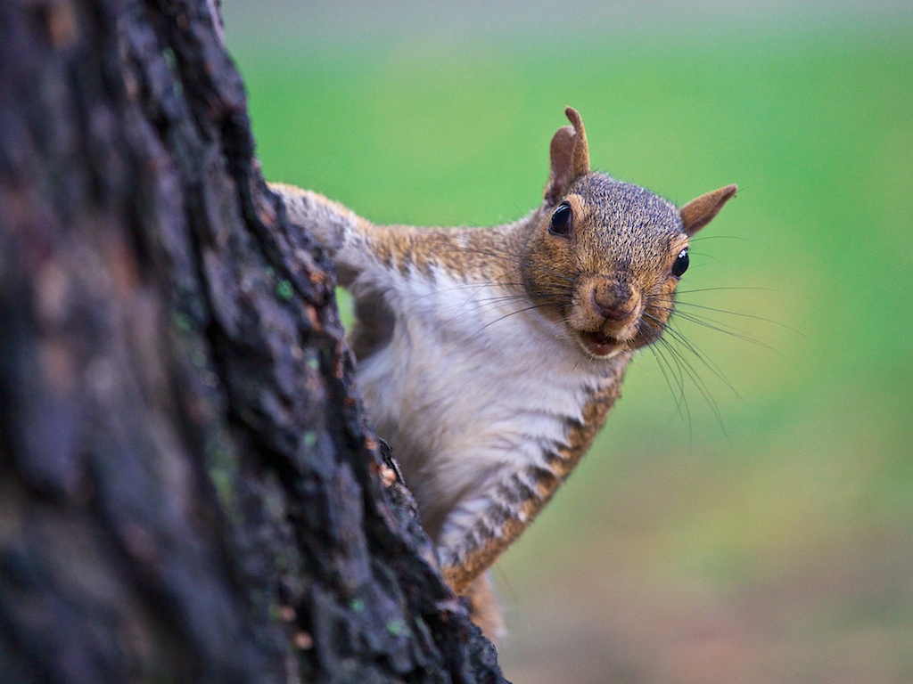

Original Squirrel
Create a black and white version by converting the RBG values to XYZ and use the Y value.
Reference image
Quantise the image to 4 values.
Reference image
Uniformly quantise the colour image to 4 values per colour channel.
Reference image
Histogram
Reference image
Quantise the colour image to 4 values per colour channel by having the same amount of intensity
samples per interval.
Reference image
Quantise the colour image by dividing the colour space with a kd
tree of depth 6.
Reference image

Original